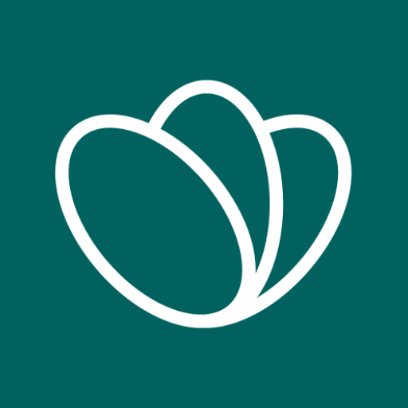

Too Good To Go is een app waar een je box kunt bestellen bij een bedrijf in jouw buurt. Dit zijn dan vaak supermartken, cafes en soms ook restaurants die hun overtollig onverkocht voedsel hebben. Over het algemeen betaal je ongeveer 33% van de waarde van de producten. Veel bedrijven doen eraan mee, omdat het een win-win-win situatie is. De bedrijven hoeven niks te doen, want het eten zou toch weggegooid worden. De mensen die het kopen krijgen een deal en het is goed voor het milieu.
Het doel van Too Good To Go is om een planeet te hebben zonder voedselverspilling, want elke dag wordt er enorm veel eten niet verkocht door restaurants, supermartken, cafés en winkels gewoon omdat het overblijft terwijl het nog goed is om te eten.
Volgens Milieu Centraal gaat een derde van al het geproduceerde eten niet op het bord van de consument. In Nederland is dat ongeveer 34 kilo aan voedsel dat verspild wordt per persoon per jaar. Een deel van het geproduceerde eten raakt verloren tijdens de productie en daar kunnen wij niet veel aan doen, maar het andere gedeelte is eten dat wordt weggegooid door winkeliers terwijl ze in principe nog in goede staat zijn om te eten. Daarom raak ik Too Good To Go echt aan!
De app To Good To Go is nu al voor de 5e keer verkozen tot meest inspirirende organisatie in Nederland. Bijna 4 miljoen mensen in Nederland hebben de app gedownload en 10.000 bedrijven zijn actief op de app. Ze hebben meer dan 22 miljoen maaltijden gered van verspilling, dat is echt heel erg indrukwekkend.
